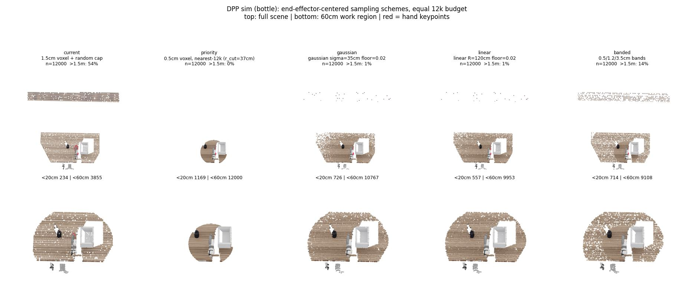
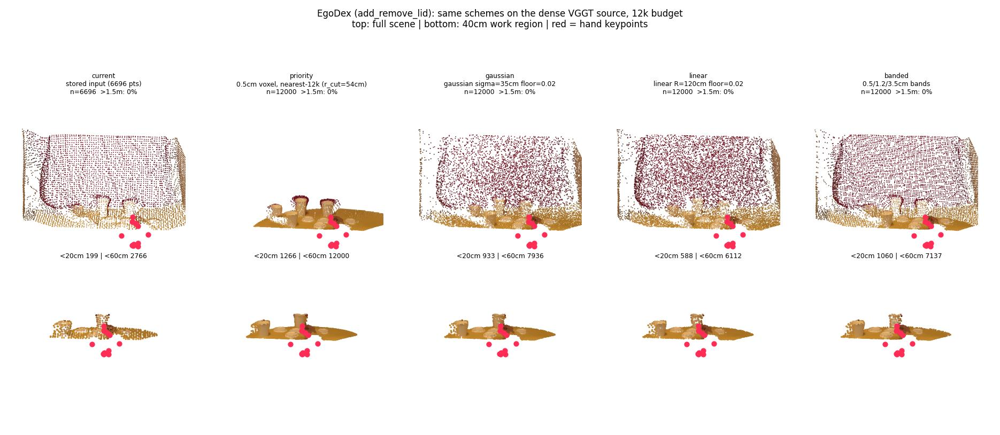

01Result
Five survival rules, one source cloud, one 12k budget. Top rows: full scene; bottom: work region; red = hand keypoints.

current spends 54% of the budget beyond 1.5 m; priority is a hard crop at an adaptive 37 cm radius; gaussian/banded keep the far field at low density.
add_remove_lid), source = dense VGGT-Omega depth (57,600 px). The stored training input is 6,696 tracked points with only 199 <20 cm — the training side is equally starved. Note: the whole scene is within 0.78 m; the background-waste problem is robot/sim-side only.Points within 20 cm of the hand (DPP sim, same 12k budget). The priority bar is also the source ceiling at 0.5 cm — it keeps everything in the shell by construction.
02Why the input is starved: tokens are the resolution
The limit is structural to the point representation, not a tuning miss.
- ·In PTv3, one retained point = one token.Coverage × density = token budget, hard-capped at
max_scene_points = 12,000. At the shipped 1.5 cm grid the cap already binds (13,038 voxels), and the excess is dropped uniformly at random — so the background keeps its share. - ·Measured on the DPP bottle frame:54.3% of the budget beyond 1.5 m (max 3.76 m); 64 points <10 cm, 234 <20 cm, 1,148 <30 cm of the hand. Those far points are static, so they also get ≈0 weight in the motion-weighted world-model loss — over half the input is dead for both objectives at once.
- ·Finer grids reallocate but can't escape the cap.A 0.5 cm grid triples the work-region share (32% → 61%) yet the total stays pinned at 12k;
grid_sizeis a checkpoint-contract key, so changing it means finetuning, not a config flip. - ·Earlier hard-crop evidence re-read:the background-crop test halved wrist displacement (7.72 → 4.45 cm at t=0, policy went passive) — but it removed the far field entirely and never unbound the cap, so it tested the cliff, not the density.
03What we tried: five schemes, one budget
All schemes see the same source cloud; only the survival rule differs. Weighted sampling is exact (Efraimidis–Spirakis, without replacement).
| Scheme | <20cm | <30cm | <60cm | >1.5m | Judgement |
|---|---|---|---|---|---|
| current | 234 | 1,148 | 3,855 | 54% | baseline; majority of budget wasted |
| priority | 1,169 | 7,181 | 12,000 | 0% | adaptive-radius crop (r_cut=37 cm) — far target guaranteed invisible; diagnostic upper bound only |
| gaussian | 726 | 3,976 | 10,767 | 1.3% | 3.1× near-field, smooth falloff, nonzero floor everywhere; stochastic |
| linear | 557 | 3,162 | 9,953 | 0.9% | dominated by gaussian at equal floor — dropped |
| banded | 714 | 4,455 | 9,108 | 13.8% | deterministic, no cliff, structured coarse far field; best contract fit (3 numbers) |
DPP sim, bottle. EgoDex sample (40 cm work region): stored input 199 <20 cm → priority 1,266 · gaussian 933 · banded 1,060.
- →Conclusion 1 — allocation, not source.The 0.5 cm source holds 1,169 voxels <20 cm; uniform-random capping keeps ~230 of them. Reallocation alone buys 3–5×.
- →Conclusion 2 — recommended: banded primary, gaussian ablation, priority as strawman.If even priority's near-field maximum doesn't move closed-loop SR, density was not the binding failure (conditioning collapse remains a live rival hypothesis from the 08-01 wrong-attractor account).
- →Conclusion 3 — the scheme is part of the observation contract.It must be applied identically at train and deploy; on the EgoDex side that means re-extraction at the CoTracker query stage (~14% track survival ⇒ query ~7× the target), not just re-voxelisation. Sampling compute itself is negligible.
04VGGT-Omega: what it can and can't do
Verified against the vendored source (pointbridge/third_party/vggt-omega), not the paper.
- ✓Pixel-dense geometry from a compact latent.Per 512² frame: 1 camera + 16 register + 1,024 patch tokens ≈ 1,041 tokens — 12× fewer than PTv3's 12k input — and the DPT-style DenseHead decodes them back to per-pixel depth/point maps (57,600 samples). Resolution lives in channels + decoder, not in token count: there is nothing to cap.
- ✓Video/history native.The Aggregator alternates frame-wise and global attention over the sequence; the CameraHead handles the moving ego camera. Multi-frame is what it was built for.
- ✓Perspective = built-in foveation.Pixel density on a surface falls as 1/z² — the ego camera looking at the workspace allocates samples toward the hand automatically. Section 03's schemes are hand-crafted approximations of this.
- ✗No spatial language grounding.The TextAlignmentHead reads out one global, L2-normalised scene-level embedding (CLIP-style retrieval) — no per-patch language field. Deferred anyway: on single-object DPP scenes language is not the failure suspect.
- ✗No agent-free scene.It reconstructs whatever is in the pixels, hand included. This is the crux for human→robot transfer — see the proposal.
- ✗Scale-ambiguous depth; sim renders untested.Training already anchors scale via the GT hand; at deploy the robot keypoints / calibrated camera anchor it. DPP sim currently feeds GT depth (zero perception error) — VGGT on synthetic renders introduces error where there was none. Must be smoke-tested.
05Proposal: VGGT-Omega-based Dex-PointWAM
The strongest argument is our own pipeline: EgoDex training clouds already are VGGT-Omega outputs — then every later stage discards information.
today: VGGT-Omega dense depth → lift → track-select (~14% survive) → 1.5cm voxel → 12k cap → PTv3
proposal: RGB history → VGGT-Omega Aggregator → patch tokens → action DiT (cross-attn: text, KP12 query tokens)- ·Action expert unchanged in spirit.The DiT keeps CLIP-text cross-attention; robot keypoints become query tokens carrying 3D position via the CameraHead's projection. The KP12 action space — the embodiment bridge — is retained as-is.
- ·The world-model objective arguably improves.Predict future depth/point maps → pixel-dense flow supervision instead of 14%-survival sparse tracks.
- →Risk 1 — the embodiment gap re-enters through pixels.Point clouds + keypoints gave appearance invariance; patch tokens embed hand/arm appearance. Plan: segment the agent (SAM3/EgoHOS for human, URDF projection or sim GT seg for robot), drop the agent's patch tokens, insert KP12 tokens. Price: 16 px mask granularity.
- →Risk 2 — sim domain gap.Predicted vs GT depth on synthetic renders; testable in ~1 GPU-hour, finetunable on sim GT depth if needed.
- ·Cost.1B-param encoder (ckpt 4.58 GB) vs PTv3-small + DINOv3; chunk-replanning deploy on H100 is realistic, training cost rises materially.
- ·Two tracks, different time constants.Sampling schemes = tactical fix inside the current architecture (cheap FT arm, doubles as the density-vs-conditioning diagnostic). VGGT-Omega encoder = strategic fix that removes the token-budget problem class.
06Next
- ·De-risker A (pending go): VGGT-Omega zero-shot on DPP sim renders.Depth quality vs the GT buffer; ~1 GPU-hour.
- ·De-risker B (pending go): agent-free feasibility.Hand-mask + patch-token drop on a few EgoDex frames; does the scene reconstruction survive? ~1 GPU-hour.
- ·Tactical arm (pending go): banded-sampling finetune on DPP data + matched deploy.First closed-loop signal on whether near-field density moves SR at all — before committing to EgoDex re-extraction.
07Artifacts & repro
- ·Obs dumps (as-received input + pre-voxel source)/rlwrld-unified-checkpoints/beomjun/obsdump_pointmap/ · job 72332 · launcher openarm-sim/scripts/dump_obs_npz.sbatch
- ·Renderersopenarm-sim/scripts/render_density_configs.py · render_voxel_sweep.py · render_obs_orbit.py
- ·EgoDex samplewds_egodex_part1_fullscene/train/train-rank00-000000.tar :: add_remove_lid__0__0_11
- ·VGGT-Omega source + weightspointbridge/third_party/vggt-omega · egodex-pipeline/checkpoints/vggt_omega_1b_512.pt